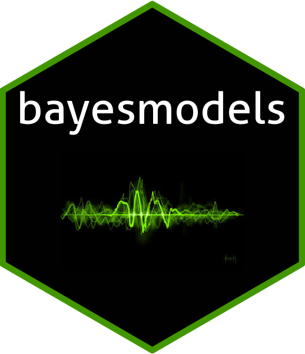

A parsnip backend for
Bayesianmodels in thetidymodelsframework.
Tutorials
- Bayesmodels and Modeltime Integration: Learn how to integrate bayesian models with the modeltime ecosystem.
Installation
CRAN version
install.packages("bayesmodels")Development version:
# install.packages("devtools")
devtools::install_github("AlbertoAlmuinha/bayesmodels")Why Bayesmodels?
Bayesmodels unlocks multiple bayesian models in one framework.In addition, it allows you to integrate these models with the Modeltime and the Tidymodels ecosystems.

In a single framework you will be able to find:
Sarima:
bayesmodelsconnects to thebayesforecastpackage.Garch:
bayesmodelsconnects to thebayesforecastpackage.Random Walk (Naive):
bayesmodelsconnects to thebayesforecastpackage.State Space Model:
bayesmodelsconnects to thebayesforecastandbstspackages.Stochastic Volatility Model:
bayesmodelsconnects to thebayesforecastpackage.Generalized Additive Models (GAMS):
bayesmodelsconnects to thebrmspackage.Adaptive Splines Surface:
bayesmodelsconnects to theBASSpackage.Exponential Smoothing:
bayesmodelsconnects to theRgltpackage.